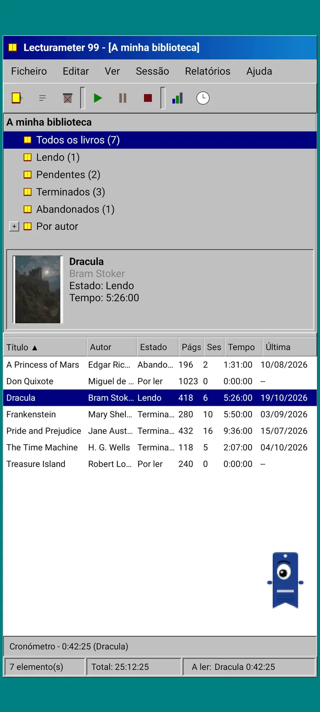
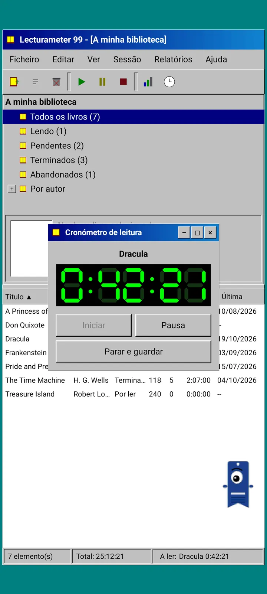
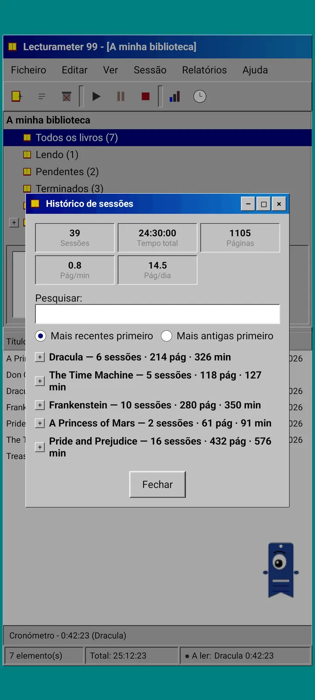
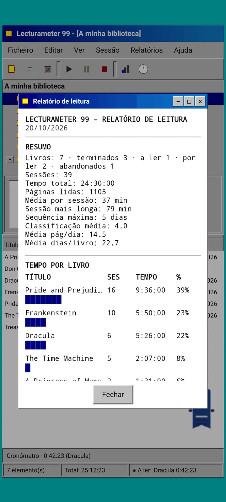

Blogue · 2026-09-24
Lecturameter 1999: como seria o Lecturameter como programa antigo de PC?
Um cliente alternativo do Lecturameter com janelas, menus, tabelas e um temporizador LCD, que abre as tuas cópias de segurança reais. Como surgiu, o que tem e o que deixa de fora de propósito. Chega grátis à Play Store e à App Store.
O Lecturameter 1999 anda a cozer há alguns meses. Fui-o construindo aos bocados, aqui e ali, sem pressa e sem plano. Só me comecei a dedicar a sério quando vi que a versão para iOS era mais simples do que esperava e me deixava margem para o acabar.
Não é a única experiência. Há outros projetos do universo Lecturameter em mente, alguns bastante avançados e outros mal começados. A maioria provavelmente nunca verá a luz do dia.
De onde vem?
Tudo começou com uma experiência à volta da qual andava há algum tempo.
A ideia era reconstruir o Lecturameter de raiz, várias vezes, com premissas de design radicalmente diferentes. Sem tocar na app verdadeira e sem intenção de a substituir. Saíram sete versões. Uma imitava uma app Android de 2016, outra imaginava como seria em 2036, outra transformava a biblioteca numa estante com lombadas que engrossam à medida que lês, e outra foi pensada para uma consola portátil com dois ecrãs.
A que mais me agradou foi a de 1999. Um programa de secretária do final dos anos noventa: denso, utilitário, tudo em janelas, menus e tabelas. Decidi acabá-la, aos poucos, como exercício divertido, e transformá-la num cliente completo, com os dados reais do Lecturameter por baixo.
O que é?
O Lecturameter 1999 é uma app independente, separada do Lecturameter. Quando a abres, vês uma única janela maximizada sobre um ambiente de trabalho verde-azulado. No topo, a barra de título e os menus: Ficheiro, Editar, Ver, Sessão, Relatórios e Ajuda. Por baixo, uma barra de ferramentas com ícones pixelizados. A área central está dividida em duas: uma árvore com a biblioteca e um painel de pré-visualização com a capa, e uma tabela com uma linha por livro. Em baixo, a barra de estado com o número de itens, o tempo total e o livro que estás a ler.



Os mesmos dados do Lecturameter
Esta é a parte que transforma a experiência em algo utilizável. Por baixo da casca de 1999 está o modelo de dados real do Lecturameter, copiado tal como está: os mesmos livros, as mesmas sessões, os mesmos estados, pontuações e notas. A cópia de segurança que exporta é o mesmo ficheiro que o Lecturameter exporta, e também aquele que importa.
Na prática, isso significa que podes ir a Ficheiro, importar a tua cópia de segurança e ver toda a tua biblioteca numa tabela de 1999. Ler durante uma semana com o temporizador LCD. Exportar. Voltar à app moderna com as novas sessões e sem teres perdido um único campo pelo caminho. O CSV do Goodreads também entra e sai.
A pesquisa de livros é igual à do Lecturameter: consulta o catálogo da própria app e o Google Books, e preenche título, autor, páginas, ISBN e capa. A capa é posterizada e desenhada sem suavização para parecer um GIF da época.
Sessões, histórico e relatório
O fluxo de leitura é o do Lecturameter, traduzido para janelas. Seleciona um livro na tabela e carrega no botão de reprodução. Abre-se a janela do temporizador, com um mostrador de sete segmentos a verde sobre preto. Podes movê-la, minimizá-la para uma barra de tarefas ou fechá-la: o tempo continua a contar na barra de estado.
Quando carregas em parar, abre-se a caixa de diálogo para guardar a sessão: data, minutos, primeira e última página, comentário. O resumo calcula páginas e ritmo enquanto escreves. Se chegares à última página do livro, pergunta se o terminaste. As sessões manuais adicionam-se a partir do menu Sessão.
O histórico agrupa as sessões por livro numa árvore com mais e menos, com cinco valores no topo: sessões, tempo total, páginas, páginas por minuto e páginas por dia. Toca duas vezes numa sessão para a editar, mantém premido para a eliminar.
As estatísticas são um relatório de leitura em texto de largura fixa, como se saísse de uma impressora: um resumo com a sequência mais longa e a pontuação média, o tempo por livro com barras de blocos, a velocidade em páginas por dia, um calendário do ano desenhado com caracteres consoante as páginas lidas em cada dia, e os últimos sete dias.



Pagi 99
O Pagi também viaja até 1999. É a mesma silhueta de marcador de livros com um só olho, mas pixelizada, e anda à solta pelo ecrã como os assistentes de escritório daquela época. Arrastas com o dedo, diz uma frase curta quando lhe tocas e muda de expressão consoante o que estás a fazer: pensa enquanto procuras um livro, lê enquanto o temporizador corre e celebra quando guardas uma sessão ou terminas um livro.
As dicas da app aparecem em balões amarelos ancorados ao Pagi, uma só vez cada. Se quiseres revê-las, estão em Ajuda, em Dica do dia.



O que fica de fora
O Lecturameter 1999 é mais simples de propósito. É uma experiência e, em princípio, não terá mais desenvolvimento depois do lançamento. As novas funcionalidades continuarão a chegar ao Lecturameter.
Ao construí-lo decidi que tudo o que não afetasse o fluxo de leitura ficava de fora. Por isso o Lecturameter 1999 não tem Pro. O que vês é o que recebes.
O Lecturameter 1999 sairá em todos os idiomas que o Lecturameter suporta.
Quando?
Chegará à Play Store e à App Store, grátis, depois de o Lecturameter para iOS e a versão 3.7 saírem. Está acabado e a funcionar no meu telemóvel. Faltam os testes com a minha biblioteca real e os últimos detalhes antes de o publicar. Quando estiver disponível, anuncio-o aqui, no X e no Reddit.
Entretanto, o Lecturameter continua a ser o Lecturameter, com os seus temas, os seus desafios e os seus bingos. A edição de 1999 é outra maneira de olhar para os mesmos dados.
Enquanto esperas, o Lecturameter no Android
Continua a ler: Lecturameter 1999 · Tempo de leitura ou páginas · Cronómetro de leitura